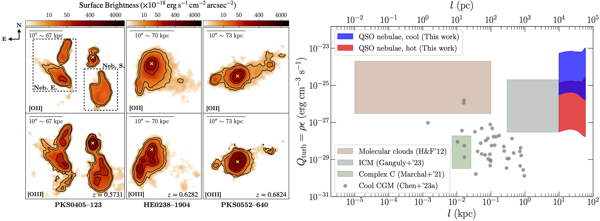

Chen et al. 2024, ApJL accepted.
Welcome!
I'm a joint Carnegie-Caltech Brinson Fellow
at California Institute of Technology
and Carnegie Observatories
The background here is a photo I took in an observing trip to Chile, showing the Magellan 6.5-m telescopes at the Las Campanas Observatory.
(This site was last updated on Nov 27, 2024.)
Research
I'm broadly interested in the cosmic baryon cycle, with a special focus on observations of the diffuse circumgalactic medium (CGM) -- the outermost envelopes of galaxies. I seek to better understand the dynamical state of the CGM, and its connection to the star-formation/AGN activities of galaxies. My work heavily relies on data obtained by wide-field, integral-field spectrographs (e.g., VLT/MUSE, JWST/NIRSpec IFU), together with photometric and spectroscopic data from several different telescopes such as the Hubble Space Telescope and the Magellan Telescopes. I also have extensive experience in lens modeling of strong gravitational lensing clusters, with both parametric and free-form methods. I obtained my PhD in 2024 from the University of Chicago, where I worked with Prof. Hsiao-Wen Chen.
You can find me on Google Scholar and LinkedIn.
Below you can find a list of my recent 1st-author papers. For a complete list of my publications, please check out the SAO/NASA ADS.
Chen et al. 2024, ApJL accepted.
Chen et al. 2024, ApJ.

Chen et al. 2024, ApJ: In this paper we use an ensemble sample of eight quasar nebulae at z≈0.5–1. The VSFs measured for all eight nebulae are best explained by subsonic turbulence in the cool gas, which in turn strongly suggests that the gas is dynamically coupled to the hot ambient medium. We also found that the turbulent heating rate in the QSO nebulae are around 1000 times higher than that in cool gas clumps probed in absorption. .
Chen et al. 2023, MNRAS.
Chen et al. 2023, MNRAS: In this paper we use velocity structure functions to constrain the turbulence in extended QSO host nebulae revealed by [OII] and [OIII] emission lines. One source shows spectacular agreement with the expectation from Kolmogorov turbulence!
You can watch me giving a 5-min video summary, posted on the Galactic Atmospheres online forum.
Chen et al. 2021, MNRAS.
3 seen in Lyman-alpha"/>
Chen et al. 2021, MNRAS: In this paper we presented a detailed analysis of two giant Lyman-alpha arcs at z > 3 strongly lensed by a massive cluster. Using spatially-resolved line profiles revealed in deep MUSE observations, we identified these arcs as supergalactic winds driven by nearby star-forming galaxies.
You can also watch me giving a 4-min video summary, posted as part of the KITP workshop "Fundamentals of Gaseous Halos".
Chen et al. 2020, ApJ.

Chen et al. 2020, ApJ: Using a super cool cluster lensing system in the nearby Universe, we demonstrated that the geometric configuration of the lensing effect here requires the presence of dark matter, hence presenting a two-dimensional challenge to alternative gravity theories.
There is also an Astrobites article giving a very nice summary of this paper.
Chen et al. 2018, ApJ.

Chen et al. 2018, ApJ: Here we directly estimate the mass of a supermassive black hole (SMBH) using a lensed image near the center of a brightest cluster galaxy at z=0.5, when the Universe was only half of its current age. The mass of the SMBH turns out to be ~1000 times more massive than the SMBH at the center of the Milky Way!
I've tremendously enjoyed working with IFS data, and am always happy to chat about data reduction/analyses, line feature fittings, machine learning/AI, strong lensing, and any combination/synergy of these topics.
Highlighted Conferences/Talks
*Hong Kong University of Science and Technology; IAS Seminar, Dec. 2024
*The Chinese University of Hong Kong; Astronomy Seminar, Dec. 2024
*City University of Hong Kong; Physics Seminar, Dec. 2024
*The University of Hong Kong; Physics Seminar, Dec. 2024
*The Ohio State University; CCAPP Seminar, Nov. 2023
Arizona State University; Oases in the Cosmic Desert, Feb. 2023
University of Milano-Bicocca, Italy; What matter(s) around galaxies, Sept. 2022
*University Observatory (USM) of LMU Munich, Germany; Seminar, Jul. 2021
*University of Michigan; Astronomy Seminar, Feb. 2021
*Carnegie Observatories; Tea Talk, Dec. 2020
*The Chinese University of Hong Kong; Workshop on Cosmology, Jan. 2018
University of the Basque Country, Spain; Cosmology Seminar, Oct. 2017
University of Michigan; Astronomy Seminar, Jul. 2017
*Hong Kong University of Science and Technology; Gravitational Cosmology Workshop, Jan. 2017
Leiden University, Netherlands; Celebrating a Century of Gravitational Lensing, Jul. 2016
About Me
Outside of my research life, I enjoy traveling, hiking, meeting new people, exploring new cuisines and drinks, and spending time with friends and nature. In the summer of 2022, I finally learned how to swim and have been an avid swimmer ever since. In April 2023, I also took up rock climbing, thanks to the encouragement of a group of friends who are, by all accounts, climbing enthusiasts (or addicts!). During the height of the COVID-19 pandemic, I adopted my little cat, Jenny, who alternates between feisty and cuddly. I love her deeply.
I grew up in Guizhou province in southwest China, a region that, while economically and educationally underdeveloped, boasts gorgeous mountainous landscapes and a rich cultural heritage shaped by millennia-old traditions and histories of multiple ethnic minorities. I studied at the University of Hong Kong (HKU) and graduated with a B.Sc. in physics and an M.Phil. in astronomy. Growing up with little access to quality education, I feel extremely grateful for the chains of lucky events and supportive mentors that allowed me to reach beyond my limitations. My experiences of living in mainland China, Hong Kong, and the US have deepened my appreciation for diversity and inclusion -- values that thrive on empathy and the willingness to approach the unknown with an open mind. And an open mind, as I’ve repeatedly learned through struggles with my own belongingness and identity, is one of the greatest gifts we can offer ourselves and others.
I once aspired to be a clinical psychologist and was working towards a master's degree in psychology. However, I ultimately decided to leave the program halfway to return to graduate studies in astrophysics. Although becoming a frontier mental health professional is not my career priority right now, mental health awareness remains one of the issues close and dear to my heart.
Contact
mandyc@caltech.edu
GitHub: github.com/mandychen-astro
LinkedIn: linkedin.com/in/cuncheng-mandy-chen
Cahill Center for Astronomy and Astrophysics, Room 239
1216 E California Blvd, Pasadena, CA 91125
&
Carnegie Observatories, Room 129
813 Santa Barbara St, Pasadena, CA 91101